“Affiliate Butler Pro” Documentation by “Waseem Senjer” v1.0
“Affiliate Butler Pro”
Created: 24/12/2015
By: Waseem Senjer
Email: waseem.senjer@gmail.com
Thank you for purchasing my plugin. If you have any questions that are beyond the scope of this help file, please feel free to email via my user page contact form here. Thanks so much!
Table of Contents
- Intro
- Installation and Upgrade
- Settings
- Keywords Management
- Links Types
- Statistics
- Support
- Credits
- Intro
- File Structure
- Quick Start Guide
- Features Overview
- Quick Fix Guide
- Frequently Asked Questions
- Latest FAQs online
- I can't login, what should I do now?
- Does it physically change my WordPress folders and files?
- Does it works with Nginx ?
- Why my settings page is different with official screenshots?
- I hide both wp-login and wp-admin but I still can see them. Why?
- This plugin break my other plugins. What should I do?
- I change the plugin and it make my site ugly! Why?
- Is it multisite compatible?
- Changelog
A) Intro - top
@TODO - With Affiliate Butler Pro nobody can know you use WordPress! This not only greatly increases your security against hackers, bad written plugins, robots, spammers, etc. but it also allows you to have more beautiful URLs and better control over WordPress.Author: Waseem Senjer
Author URL: https://waseem-senjer.com
Minimum Requirements
WP version: 3.4+
Tested up to: 4.4
PHP Version: 5.0+
A) Installation - top
Uploading in WordPress Dashboard
- Navigate to the 'Add New' in the plugins dashboard
- Navigate to the 'Upload' area
- Select affiliate-butler-pro.zip from your computer
- Click 'Install Now'
- Activate the plugin in the Plugin dashboard
Using FTP
- Download affiliate-butler-pro.zip
- Extract the affiliate-butler-pro directory to your computer
- Upload the affiliate-butler-pro directory to the /wp-content/plugins/ directory
- Activate the plugin in the Plugin dashboard
Upgrading - top
Simply go to Plugins page in admin panel and deactivate and delete the plugin.
This will remove your settings and now you can install new version.
If you would like to store current settings do not deactivate it and just replace files.
B. File Structure - top
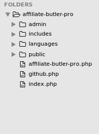 If you extract downloaded ZIP file you should have this file structure. Main folder includes four subfolders and a PHP file.
- CSS folder includes one stylesheet (admin.css). It used for backend appearance.
- Documentation contains this document and its related files.
- img folder contains three icons with different sizes. These icons don't be used currently.
- js includes one javascript file (admin.js). It mainly used for live validation in settings page and depends on jQuery library.
- lang folder will store language files. MO files with appropriate name (e.g. hide_my_wp-en_US.mo) should be located here.
- lib contains PHP files and a folder called 'mute-sceamer' used for IDS (since v4).
- class.helper.php is a set of helper functions used in other PHP files.
- class.settings-api help us to create our settings page base on WordPress settings API.
- class.HTML-minify.php We use it for safe HTML compress.
- class.CSS-minify used for safe CSS compress.
- hide_my_wp.php contains main plugin class. Almost everything will be done here.
- admin-settings.php used for admin panel settings.
D. Quick Start Guide - top
Hide My WP provides lots of cool features and all are well-organized, self-explaining and easy to use.
If you finished installation you should go to the plugin settings page and configure it. To do that navigate to the Settings menu and click Hide My WP.
General Settings tab includes a number of general options about the plugin and WordPress. For example what page should be displayed as custom 404 page or which users should be assumed as trusted. You can also hide some aspects of WordPress. For example you can hide wp-admin folder or remove WordPress generated codes from source code there.
One of the most characteristic aspects of WordPress is its URLs. Our third tab includes a number of settings allows you to disable or change these URLs. For example you can change path of your theme or disable WP feeds entirely.
You can review our features list for detailed information but as a start let's change your feed URL.
First check your feed address in your home page it should be something like http://yourdomain.com/feed/. Now Go to Permalinks & URLs tab and scroll down to find Feed section.
Enter something as Feed Base (e.g. rss) and click Save Settings. Check out your feed address again and booom!! it was changed. Now enter old URL in your browser and press enter. Oops! It can't be found!
Both feed base and feed query work similarly. Please note when permalink structure is enabled queries won't be used by WordPress itself but when someone type them in address bar they will work. This is a simple way to discover whether a site using WordPress or not so we always recommend changing queries, too.
If you are not a technical people or have not enough time to configure the plugin you can use our pre-made settings schemes. Go to start tab and choose a pre-made templates. Hide My WP has 3 pre-made settings scheme:
- Medium Privacy - More Compatibilty (Recommended)
- Medium Privacy - Quick (Recommended)
- High Privacy - Less Compatibility *
High Privacy will enable almost all of Hide My WP features and bring maximum security and privacy but you may experience some incompatibilities with other plugins. If you don't have lots of heavy plugins feel free to use this option.
Medium Privacy (Quick) is a general use settings and balance between security and compatibility. If you don't use a cache system we recommend using this scheme.
Medium Privacy (More Compatibilty) is another general use scheme and everyone can use it. It focused on compatibility so it's slower than others. If you experienced problem with other plugins or you have a good hosting (or a cache plugin!) use this template.
Please note in most cases incompatibility caused by one feature and you can just disable it.
After choosing your appropriate settings scheme click Save Settings to implement changes. If you do this it will warn you against login address change. Click OK and finish importing.
After importing, visit 'General Settings' tab. You probably see Hide wp-login.php as been checked. This means you no longer can login with old wp-login.php address obviously, because it's hided! To get your new address just add '?hide_my_wp=1234' to the old URL e.g. http://domain.com/wp/wp-login.php?hide_my_wp=1234
1234 is default admin key. It's possible to change it to anything else within 'General Settings' tab. Admin key allows Hide My WP know you are a trusted user. In fact it is not a real password and you can securely give it to anyone who needs to login (e.g. members, editors, etc.) but it doesn't mean you can share it public!
If you have a membership site with lots of members you may prefer to install Theme My Login (instead email new address to all members). This plugin is free and doesn't need any key.
E. Features Overview - top
Hide My WP includes lot of different options. Let's review some of them.
General Settings - top
Custom 404 Page:
When a user requests your hided files Hide My WP displays 404 page instead. You can use default 404 page from your current theme or make new page in your WordPress admin and use it as 404. Custom page allows you to have a cool and creative not found page.
Trusted user rules:
If you hide wp-admin folder other members can't see WordPress admin (even if they logged in successfully). You should choose their roles here to allow them to use admin panel. Administrators (like you) always are trusted!
Replace mode:
Hide My WP automatically replace old URLs with new addresses. If you use a shared hosting or have not any cache plugin this may make your site a little slow. Here you have two choices: Partial mode and Full Page mode. First only replace URLs when needed but second scan all the output. In most cases Quick mode is enough and work correctly but if you use a plugin that generate old URLs Full Page mode may help. If you use a caching plugin (even with minimum configuration) you can freely ignore all quick modes.
Hide wp-login.php:
One of the easiest way to know whether a site using WordPress or not is adding wp-login.php to its site URL. Hide My WP will hide login address so no one can know you use WordPress. But there is a problem. If you hide your login page how can you login? We solve this issue with admin key. Admin key allows the plugin know you are a trusted user. You can change admin key to anything. If you enabled this option and still see wp-login page see this answer!
Hide wp-admin folder:
Another common way to know whether a site using WordPress or not is checking wp-admin folder you can hide it here. Trusted users still can access to admin panel without using admin key.
Spy notifier:
If you enable this option an email will be send to you whenever someone visit 404 page. This email includes some details about URL and user so you can find broken links and user who is researching about your site. Please note if you have a high traffic website a broken link may send lots of emails.
Full Hide:
If your site can be discovered by CMS finder tools. Use this feature for even more privacy
Remove Feed/Other Metas:
If you check your site's source code you see some additional meta headers generated by WordPress. These metas includes feed URL for that specific page, previous and next posts, short links, Windows Live Writer tags, etc. Most of them used rarely and you can clean all of them by this option.
Remove body/post/menu classes:
WordPress adds lots of CSS classes to some elements in your code. For example this is a body class: "home blog logged-in admin-bar no-customize-support". These classes let you change your theme using pure CSS and are useful when you have not access to PHP files (e.g. wordpress.com blogs). You usually don't use these classes but stick in your mind that some plugins and themes may use them for better appearance (e.g. Woo Commerce).
We do not remove popular classes (like active menus classes).
Default Tagline:
Your feed always displays blog tagline (even if your theme doesn't). So if you don't change default tagline you can hide it using this option.
Compress Page:
There are always some html comments in your source code that can indicate you are using WordPress. This option not only remove these comments but it also compress your page and make it faster to load (and harder to read!). You can use Quick or Safe mode. First is faster but may have problem with non-standard pages. Safe is more compatibile but slower. I recommend to use this option (specially Safe mode) with a cache plugin.
Also note this option won't remove any IE specific comments (e.g. [if IE 8]).
Hide PHP Files:
This is an important feature and block direct access to all PHP files. This option greatly increase security but you should use it carefully. Some plugins need direct access php files (e.g. for importing feeds there is an import.php or for AJAX operations an ajax.php). To make these plugins work you need to know these files and add their path to except list.
Please note index.php, and other files used by WP are in except list by default. wp-login.php and wp-admin folder will be controlled by their own options.
There is also two options that helps you to use this feature without compatibility issues (exclude theme files and exclude plugins files).
Hide Other WP files:
There are also some other WP files that are not PHP but can be used to indicate whether it's a WordPress site or not. This option will hide them.Canonical Redirect:
If you enabled permalink structure WordPress redirects old queries URLs (like ?p=2) to new one. If you want to use queries URLs you should enable this option.Email Sender Name:
WordPress sends email in its own name. You should change this to something meaningful (e.g. your site name)Email Sender Address:
Default sender address is wordpress@domain.com. You can change it to info@yourdomain.com, no-reply@domain.com or something similar.Replace in HTML:
This is one of the most useful features in Hide My WP. There are some plugins that print credit link or additional data in your theme. You can replace or delete these words using this option. Just open your source code select and copy the text and replace it with something new. For example 'old=new' will replace all 'old' words with 'new'. Similarly, 'old=' will delete 'old' from your source code. Please note words in your posts will be change, too.Permalink & URLs - top
New theme path:
Here you can change your theme URL. All files and folders in your source code will be replace with new address for example /wp-content/themes/style.css will be replace with /template/style.css or wp-content/themes/twentytwelve/images/png/logo.png will be change to /template/images/png/logo.png. You can also use nested folders like test/static/skins/. Please note it's NOT possible to use plugins or wp-include pathes as a base folder for this field.
New style path:
In addition to theme path you can change style URL. You can use theme path or enter a new for style. For example if theme path is /template you can just rename style to main.css: /template/main.css or use a different url for style.css: /styles/css/main.css. Although there is no limit for file name and you can use any extension or no extension (e.g. /path/style.php or /style/) but we recommend to don't be creative here.
Minify style:
This option depends on New style path. If you change style path you can also minify its content. Almost all of style.css files have some information about the theme and its author. This information are available public and anybody can easily know this is a WordPress theme. This option not only removes this information but it also delete whitespaces and other CSS comments so your site will be a little faster.
Clean style:
WordPress needs some CSS classes to use for gallery and images. All themes should have these classes. This option will replace these classes with their new names (both in stylesheet and HTML). Here is more details:
- wp-caption => x-caption
- alignright=> x-right
- alignleft => x-left
- alignnone=>x-none
- aligncenter=>x-center
New wp-includes path:
Most themes use javascript libraries come with WordPress. jQuery is one of the most popular libraries and located in wp-includes/js/jquery path. You can change wp-include path here. It's possible to use theme path as a base for this folder. For example if your new theme path is /template you can use template/lib/.
New plugin path:
Some plugins come with CSS and JS files. These files located in plugins folder so anybody can recognize this is a WordPress installation. This option helps you change wp-content/plugins/ path to something cleaner. It's also possible to use theme path as a base for this folder. For example if your new theme path is /template you can use template/ext/ here.
Rename plugins:
Even when you change plugins path it's still possible for others to know which plugins are active in your site. Checking this option will replace all path like /wp-content/plugins/woo-commerce/ with /modules/2hg1t7.
New upload path:
Just like new theme and plugins path this option will change /wp-content/uploads/ to something else. Please note this option is totally diffrent from WordPress change upload directory located in Settings->Media. As opposed to upload path in WordPress this option won't change physical location.
Post Comment:
If you check your post source code you will see WordPress uses wp_comments_post.php to receive comments from visitors. Hide My WP let you change this file. user_commernts.php, /folder/comment.php and even /comment/ are all valid inputs for this field. In some cases this option may even work as an effective anti-spam technique.
AJAX URL:
Almost all of AJAX operations both in frontend and backend of WordPress handle by wp-admin/admin_ajax.php. You can change this path to anything else. Just like above ajax.php, /folder/my_ajax.php and even /ajax/ are all valid inputs.
WordPress Components
Here you can disable, enable or change WordPress permalinks. Please note when permalink structure is enabled URL queries won't be used by WordPress itself but when you type them in address bar they will work. This is another way to know whether a site using WordPress or not so we always recommend changing queries, too.
Authors Options:
Here you can disable or enable authors links. You can also change authors URL structure here just enter something as Author Base and you see your authors links change to domain.com/something/username. Nested folders are also possible (something/somethingelse/username). Author Queries is changeable, too. If you want links like domain.com/?user=1, enter 'user' as author query.
Author without base is another cool feature. If you check it out your author links will be replaced with domain.com/username. This is cool but there are important notes about this feature:
- WordPress uses empty Page Base by default (domain.com/sample-page) when you enable this option it's hard for it to know which URL refer to an author and which one belongs to a page. Thus if you want this option you should enter something as Page Base (e.g.domain.com/base/sample-page).
- For the same reason, you can't use %post_name% or %postid% alone as Post Permalink. You should add something before or after to make them work. For example both '/archive/%postid%' or '/%year/%post_name%' are acceptable.
Feeds Options:
Just like author link you can disable feeds, too. This apply to all feeds (include global feeds, category feeds, comments feed, etc.) Feed Base indicates the end word of feed URLs and can be change to a file name (/rss.xml) or a nested folder path (/service/rss/). As we mentioned above it's better to change default Feed Queries. New URL will be domain.com/?your_feed_query=rss2 (instead /?feed=rss2)
In this case you may need to change your feedburner address or notify your old subscribers.
Post Options:
Here you can overwrite WordPress permalink structure and change the famous '/?p=123' URLs. If you disable post URLs no one can see a single post and therefore no one can comment but archive pages and blog pages may still display posts. Please note if you use author without base feature you should not use %post_name% or %postid% alone as Post Permalink. Add something before or after to make them work. For example both '/archive/%postid%' or '/%year/%post_name%' are acceptable.
Page Options:
Just like others, pages can be disabled here. It is notable WordPress don't use any base for pages by default. If you enter something as Page Base then links like /sample-page will be changed to /your-base/sample-page. This may not be so great but if you enable author without base it's require to add something as Page Base. Please note 'Page Base' and 'Paginate Base' should have two different values.
Paginate Options:
When you have lots of posts WordPress needs to paginate them. You see links like Older Entries or Next Posts in front page, categories pages, archive pages, etc. It's possible to disable or change these URLs here but note Page and Paginate should have two different values for both base and query.
Category/Tag/Search:
Just like above you can disable or change these URLs. Category and tag bases will be overwrite WordPress permalink option. Search base will be used when you enable 'Search base redirect' option.
Search base redirect:
When user hit search button and this option has been checked, he/she will be redirected to /search-base/keyword. This is prettier than default search query (/?s=keyword) and we recommend to use it.
Disable Archive:
Unless other components you can't change archive URLs in Hide My WP but it's still possible to disable them. This option will disable daily, monthly, yearly, hourly pages. It doesn't affect categories, tags and taxonomies.
Disable Other WP:
There is still some more components you can disable with Hide My WP. Things like attachments, post types, taxonomies and comment pages can be disable here. It's important to know most of themes and plugins use post types and taxonomies for different purposes. Choosing this option make them unusable. In most cases you don't need this feature.
F. Quick Fix Guide - top
As we said because of the nature of WordPress 100% compatibility is not always accessible. But in most cases it's easy to use all plugins together with some changes in configurations.
- Make sure you have a writable htaccess file (if you use Apache) or configured your web server manually (if you use Nginx or enabled multi-site). This is a must. Follow installation guide for more details.
- Disable features that have an asterisk(*) in their names or use a more compatible settings scheme.
- If you see some plugins related info in source code use Replace in HTML feature to remove them.
- If you get 404 page make sure you didn't disable or hide require WP component before!
G. Frequently Asked Questions - top
Latest FAQs online!
= I can't login, what should I do now? =
When you hide wp-login.php you should add your admin key to login address:
e.g. your-wp-path.com/wp-login.php?hide_my_wp=1234 (default key is '1234')
= Does it physically change my WordPress folders and files? =
No, everything remains in its default location and we just control access to them. This guarantees maximum compatibility.
= Does it works with Nginx? =
Nginx support has been added since version 1.5. You need root access to configure Nginx manually. Follow installation guide for more details.
.
= Why my plugin settings page is different with official screenshots? =
It's because you don't enable WordPress permalink structure or your host doesn't support rewrite URLs (specifically .htaccess file and mod_rewrite). Also note that screenshots may come from old versions.
= I hide both wp-login and wp-admin but I still can see them. Why?
Because you are a logged in administrator! Log out and try again. Don't forget to save new login address somewhere.
= This plugin break my other plugins. What should I do? =
As you may know, Hide My WP does not change any default WordPress location. It uses best practices to maximize compatibility with others but because of the nature of WordPress this is not always accessible.
Also, some programmers are not enough experienced with WordPress or simply choose the easiest way. This may cause some little problems. You can still use both plugins follow our Quick Fix Guide.
= I deactivated the plugin and it makes my site ugly! Why? =
When the plugin deactivated suddenly by WP you should flush rewrite rules. Just go to admin panel and visit "Settings->Permalink". That's it and everything should work now!
= Is it multisite compatible? =
Multisite support has been added to version 1.5. You need to configure your htaccess file manually. Follow installation guide for more details.
Read more FAQs online
H. Changelog - top
4.52 - 07/28/2015
- Fixed: an important security bug
- Fixed: a php warning error
- Improved: Firewall run sooner to act faster
- Improved: Avoid direct access to PHP files now works with double extension files
- Improved: provided IP is more reliable now
4.51 - 07/02/2015
- Improved: Replace rules limitation has been increased to 30
- Improved: Better cover for wordpress
- Fixed: 500 error in old versions of Apache
- Fixed: A bug which prevents replace rules to be restored by undo button
4.5 - 06/18/2015
- New full hide feature to improve undetectability of WP and themes
- New CDN path tools which make it easy to setup CDN
- New path for wp-content (useful for some plugins which located in wp-content like cache plugins)
- Improved Simplification of UI
- Improved: IDS for anti-XSS attacks
- Improved: antispam checks
- Improved: replacement tools to make it easy for everyone
- Improved: IDS system for slightly faster responses
- Fixed: reply email bug fix in Contact form 7
- Fixed: loading issue of HMWP_MS.CSS has been fixed
- Fixed: WP-Rocket-Minify incompatibility
4.03 - 02/13/2015
- New Option to replace new URLs in AJAX
- BUG FIX: Inserting media with safe HTML compression
4.02 - 02/06/2015
- Bug Fix: wp-signup.php was hided
- Bug Fix: WP IDS rules were updated
- Bug Fix: Make New admin path work in Multisite
- Bug Fix: Purchase code remains after importing new settings
- Bug Fix: New admin path for Nginx webserver
- Improvment: IDS alert email is reformatted
- Improvment: More readable info for IDS log
4.01 - 11/12/2014
- Compatibility with Hyper Cache WP-Rocket
- General improvement for auto update
- A bug fix related to displaying message
4.00 - 11/06/2014
- NEW: Introducing IDS (Intrusion Detection System) with customized rules for WP
- NEW: Auto plugin update (require valid purchase code)
- NEW: Finally official support for IIS (Windows servers!)
- NEW: Undo previous settings whenever you want!
- NEW: Light settings scheme was added
- NEW: Ability to use backslash in Replace in HTML
- IMPROVEMENT: Full compatibility for gantry-based themes
- IMPROVEMENT: Options mapper was written
- IMPROVEMENT: Automatic compatibility test has been added to guide users
- FIX a bug caused by author base default value
- FIX year numbers bug (for upload directory)
3.00 - 07/01/2014
- NEW: Ability to change wp-admin! (Cool but experimental!)
- NEW: Simple and sweet Anti-Spam system
- NEW: Disable directory listing for WP, plugins and themes directories
- WP 1.9 compatibility plus UI adjustment
- Deactivating HMWP now store saved settings
- API filter added for resetting plugin
- wp-cron.php and upgrade.php added to whitelist
- Fixed a bug in page preview
- Fixed problem with feed URL and canonical URLs
- Fixed multisite blogs table prefix
- Fixed new login address notification message
- Fixed multiple messages in settings page
- Fixed problem with minify plugins that cause 400 error
- Fixed base address for some multisite installs
- Fixed a bug in register URL
- Fixed a useless notice message
2.2 - 11/20/2013
- Bug Fix: Now entering Purchase Code will remove annoying warning messages
- Bug Fix: Compatibility with /subdirectory/subdirectory/(..) network-enabled installs
- Improvement: WordPress 3.7 compatibility
- Improvement: Add several colorful messages to better guide users
- Bug Fix: Buddypress pages bug (in some conditions)
- Bug Fix: Hide /wp-login.php/ URL
- Bug Fix: Remove a notice warning in generating debug report
2.1 & 2.11- 09/21/2013
- Bug Fix: A problem in replacing new URLs (2.11)
- New Feature: Login parameter 'hide_my_wp' is now changeable!
- Improvement: W3 Total Cache Minify module works now! (Read FAQ)
- Improvement: Better blocking of CMS finder tools
- Improvement: W3TC credit text will be removed automatically (for untrusted users)
- Improvement: Presstrends code added
- Bug Fix: Log out problem in some environments
- Bug Fix: Warning message appeared in some environments
- Bug Fix: A number of fixes in helper class
- Minor changes
2.0 - 07/10/2013
- Improvement: Full WordPress 3.6 compatibility
- Feature: Replace, rename or block access any file or folder
- Feature: Simple page compression added
- Feature: Block access of CMS finder tools to pages
- Improvement: Change order of header info to hide WP better
- Improvement: Add xmlrpc.php to excerpt list by default
- Improvement: Cached CSS age extended to 3 days
- Improvement: Better description and messages for easier configuration
- Bug Fix: Scheduling problem for plugins like Backup Buddy
- Bug Fix: Preview button problem in new post page
- Bug Fix: Problem in full SSL websites
- Bug Fix: Notice message appear in update settings
- Minor changes
1.8 - 06/08/2013
- Feature: Ability to choose manual configuration to use customized htaccess
- Improvement: Better quick fix guide
- Bug Fix: External uploaded WordPress images now works correctly
- Bug Fix: Trim Replace in HTML field
- Bug Fix: Better replace for WooCommerce plugins
- Minor changes
1.7 - 05/05/2013
- Feature: Ability to replace JS URLs (like \/wp-content\/themes)
- Improvement: BulletProof Security plugin compatibility
- Bug Fix: Child themes bug fix
- Bug Fix: A bug in exporting Replace
- Bug Fix: A bug in exporting values with double slashes
- Minor changes
1.6 - 04/20/2013
- Feature: Ability to rename all plugins (useful for plugins located in premium themes e.g. Layer Slider)
- Improvement: New and better settings scheme
- Improvement: Added quick fix guide to Start tab
- Files: Update file structure to work with new Codecanyon changes
- Bug Fix: ob_start bug fix for better compatibility
- Bug Fix: Search widget bug
- Bug Fix: Hide login, admin, etc. shortcuts
- Bug Fix: Replace all AJAX URLs
- Bug Fix: Fix a bug in Nginx rewrite rules in sub-folder installs
- Documentation: Added documentation for Nginx and multisite configuration
- Minor changes
1.5 - 04/04/2013
- Performance: Up to 3 times faster with new partial replace mode!
- Feature: Nginx support
- Feature: Child themes support
- Feature: Multi-site support
- Feature: Two different minify options for HTML and CSS
- Feature: Better compatibility with two additional options for PHP files access
- Feature: Option to hide _wpnonce and theme screenshot
- Improvement: Better support for sub-directory installs
- Improvement: More compatibility for class clean up options
- Bug Fix: Style path bug
- Bug Fix: Fixed login URL problem for better compatibility with login-related plugins
- Minor bug fixes
1.3 - 03/18/2013
- Full Documentation
- Better third-party compatibility
- Minor bug fix
1.2 - 02/30/2013
- Bug Fix Release
1.0 - 02/15/2013
- Initial release
I. Credits - top
Copyright 2013 Hassan Jahangiri
Some code from:
- Dxplugin base by mpeshev
- weDevs Settings API by Tareq Hasan
- Plugin base v2 by Brad Vincent
- Rootstheme by Ben Word
Once again, thank you so much for purchasing this item. As I said at the beginning, I'd be glad to help you if you have any questions relating to this plugin. No guarantees, but I'll do my best to assist. If you have a more general question relating to the themes on ThemeForest or plugins on CodeCanyon you might consider visiting the forums and asking your question in the "Item Discussion" section.
B) Settings - top
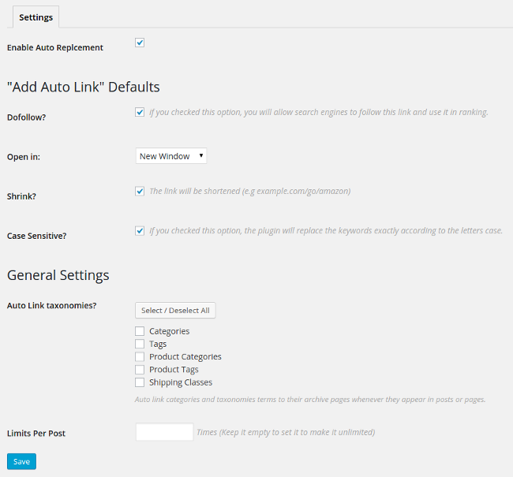Affiliate Butler comes with several settings to make you take full control of the plugin, thus I will add more settings to cope with the new features. I will add more and more features in the next releases, so stay tuned.
- Enable Auto Replcement: This option is a global switch for the plugin, If you want to disable the replacement of the keywords temporiraly without deactivating the whole plugin, you just need to uncheck this option.
- Dofollow? if you checked this option, you will allow search engines to follow this link and use it in ranking. It's simply add (rel=nofollow) if you unchecked it.
- Open in When the visitor click on the link, it's either open in a new window or the same window.
- Shrink? If you checked this option, the link will be shortened.
- Case Sensitive? The plugin will replace the keywords exactly according to the letters case.
- Auto Link Taxonomies? Auto link categories and taxonomies terms to their archive pages whenever they appear in posts or pages.
- Limits Per Post Limit the number of times that the keyword will be converted to a link per post.
C) Keywords Management - top
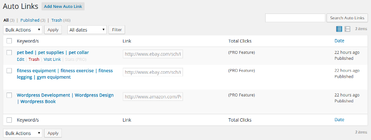Auto Links Table
This is the table where you find all your links, from this page you can (edit,delete) the link. Also, It will show the keywords of the link, the original link. You can go to this page from the Admin Menu (Auto Links ↣ All Auto Links)
Add Auto Link
"Auto Links" ↣ "Add New Auto Link"
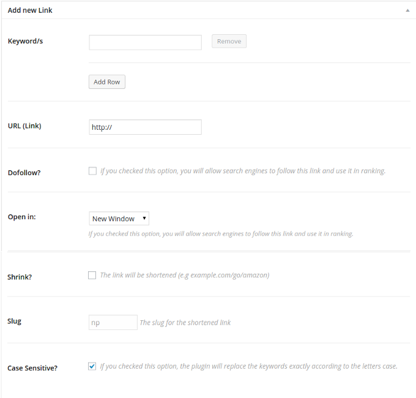This is the main page where you will add the links with the keywords.
- You can add one keywords or multiple keywords. To add another keyword, click on "Add Row" button and a text new text box will show up. Another keyword? click again on "Add Row"
- Now Add the required URL, When the visitor click on the keyword that you previously added, the plugin will take him to this URL.
- The other options I explained them in the Settings section
- Last thing, There is an option called slug, This one is disabled by default, but if you choosed to "shrink" the link, this option will be activated with an auto generated text, you can change it if you want.
D) Links Types - top

The plugin has a cool features, For example, if you want to link the keywords to a specific post or page, you only need to change the link type to "internal" and then choose the post or page by typing its title in the bottom select list as you see in the image above.
Other available link types:
Auto Link with Image popup.
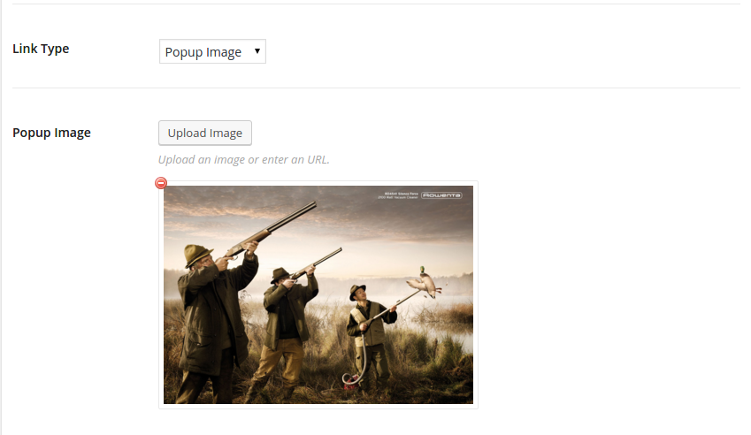Link keywords with Popup image.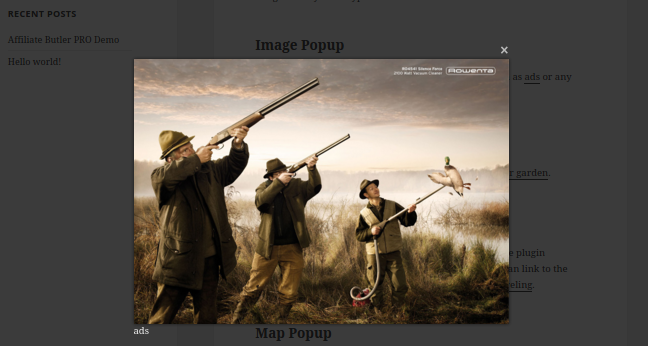
The result
Auto Link with images gallery popup.
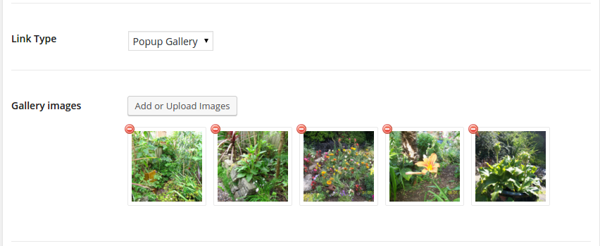Link keywords with Popup image.
Auto Link with video popup.
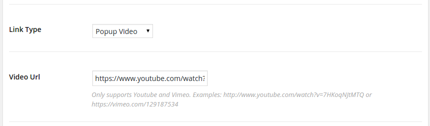Link keywords with Popup video (Youtube and Vimeo supported).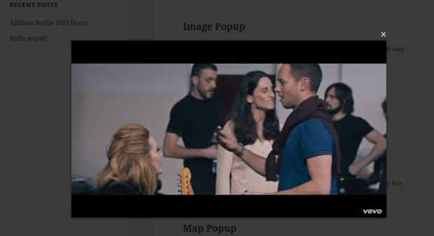
The result
Auto Link with google maps.
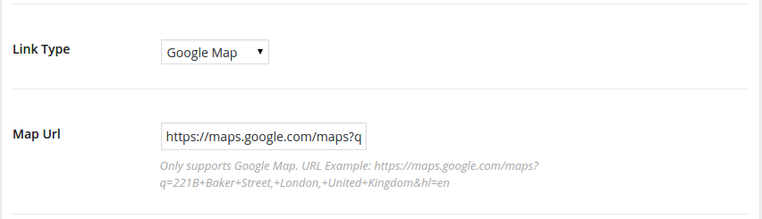Link keywords with google maps. (Dashboard)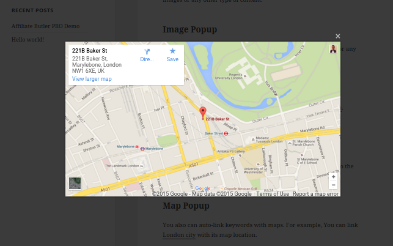
The result
Auto Link keywords with a share tooltip.
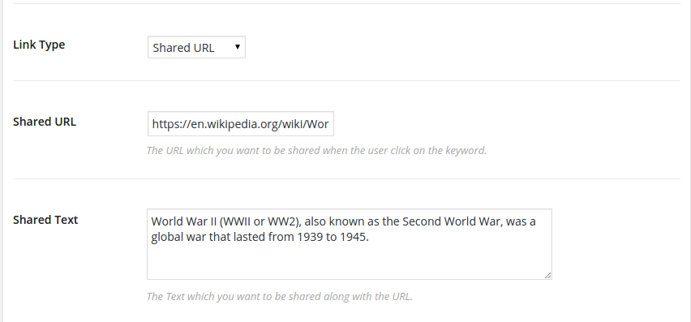Link keywords with a share tooltip (Dashboard)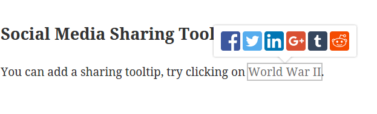
The result
E) Statistics - top
Even if the link was external, the plugin will be able to track the link and provides you with many statistics (Visits per day, Countries, Browsers, Operating Systems ). I will add more features in the statistics page in order to provide the plugin user of the maximum benefits of statistics and tracking.
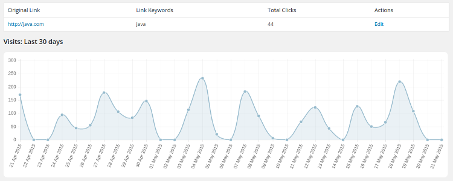 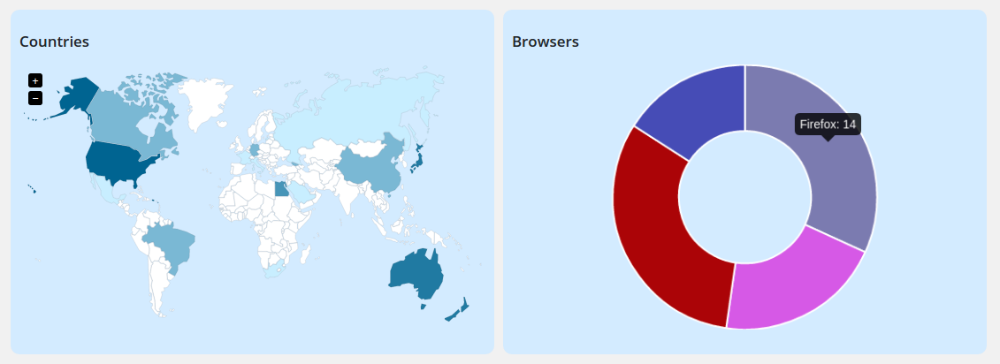F) Support - top
Do you have any problem? Did you encounter a bug in the plugin? Do you need a new feature to be included in the plugin? Do not hesitate dropping me a support ticket.
G) Credits - top
- jBox by Stephan Wagner
- Magnific Popup by Dmitry Semenov
- CMB2 by WebDevStudios
- Select2 - Select2 is a jQuery based replacement for select boxes.
- ChartJS by Nick Downie
- jQuery Vector Map Library by Peter Schmalfeldt
Waseem Senjer